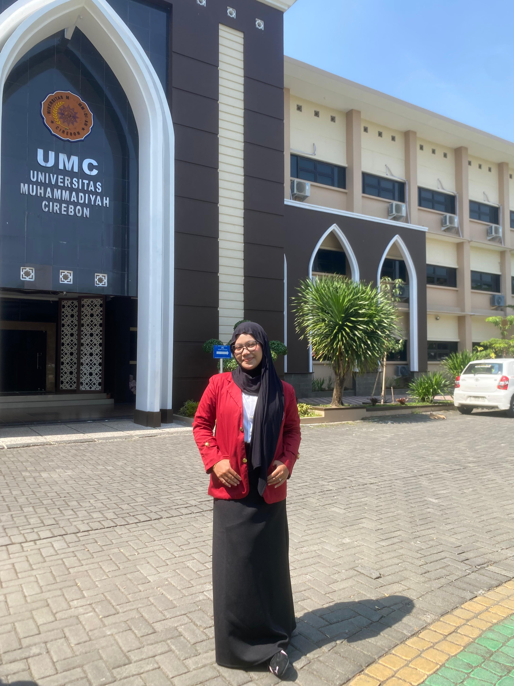

HTML
Menyusun struktur halaman web yang rapi dan semantik.
HALO, SELAMAT DATANG!
Mahasiswa Teknik Informatika yang tertarik pada pengembangan web, desain antarmuka, dan teknologi digital.
Hubungi Saya
KENALI SAYA
Perkenalkan, saya Intan Dwi Noviani. Saya Mahasiswa Universitas Muhammadiyah Cirebon sekarang saya sedang menempuh pendidikan di Program Studi Teknik Informatika. Saya senang mempelajari hal baru, bekerja sama dalam tim, dan membuat proyek sederhana yang bermanfaat.
YANG SEDANG DIPELAJARI
Menyusun struktur halaman web yang rapi dan semantik.
Mengatur warna, tipografi, tata letak, dan tampilan responsif.
Mempelajari interaksi dan fungsi dasar pada halaman web.
TERHUBUNG
Silakan hubungi saya untuk berdiskusi atau bekerja sama.
intandwin2711@gmail.com